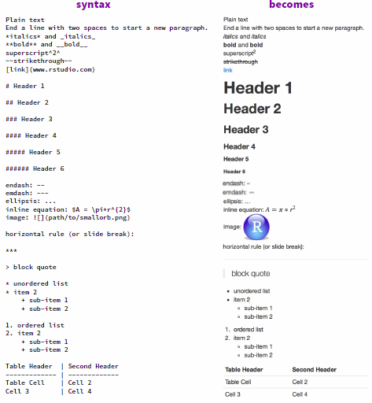

Chapter 27 R Markdown
27.1 Literate programming
Sweave, Knitr and R markdown all based on Donald Knuth’s Literate programming. Text and code are in a common file and the code follows the structure of the text.
27.1.1 Sweave
- Takes text in latex formate and R/S code chunks to generate (weave) one tex file.
- Included in R standard library (utils package)
27.1.2 Knitr
- Takes several imputs for text (Latex, Markdown, HTML, AsciiDoc, reStructuredText, and Textile) and code (R, Python, …)
- R package
- See: Knitr Homepage
27.1.3 R Markdown
Combination of Knitr and Pandoc
- Knitr: executes the computer code embedded in Markdown, and converts R Markdown to Markdown
- Pandoc: renders Markdown to the output format you want (such as PDF, HTML, Word, and so on)

- See: Markdown Manual
- Compile/Render an R Markdown document by
- using function
rmarkdown::render() - pushing knit button (Ctrl + Shift + k)
- using function
27.2 Components
- Three basic components of an R Markdown document
- Metadata (YAML frontmatter)
- Text (Markdown)
- Code (R, Python, C++, …)
27.2.1 YAML frontmatter
The information of the YAML frontmatter is passed to the output function when the document is rendered. To see all possible options go to the help page of the output function (e.g. ?rmarkdown::html_document or ?bookdown::gitbook). Some options are passed to kniter and some are passed to pandoc.
All output functions:
beamer_presentationcontext_documentgithub_documenthtml_documentioslides_presentationlatex_documentmd_documentodt_documentpdf_documentpowerpoint_presentationrtf_documentslidy_presentationword_document
And some of extension packages (you need to include the package name) e.g. tufte::tufte_html
The YAML frontmatter follows the a certain syntax
- starts and ends with three dashes
--- - tag and value sparated by
: true,false(unlikeTRUE,FALSEin R)- vectors: with square brackets e.g.
output: ["html_document", "word_document"] - lists: indet code by two spaces
27.2.2 Text
The syntax for text (also known as prose or narratives) is Markdown. Markdown is a simple formatting syntax for authoring HTML, PDF, and MS Word documents.
Find all formatting syntax in detail in the Pandoc Manual e.g.
or in less detail in the R Markdown manual
- \ : escape
- ` : code
- * : italic/bold
- _ : italic/bold
- ^ : superscript
- ~ : subscript
- $ : formula
- @ : reference
- # : header
- -/+ : itemize
- > : blockquote

My favourit html_document themes: flatly, spacelab, lumen and sandstone
27.2.3 Code
27.2.3.1 Types
Two types of code
- A code chunk starts with three backticks like
```{r}whererindicates the language name, and ends with three backticks. You can write chunk options in the curly braces (e.g., set the figure height to 5 inches:```{r, fig.height=5}). - An inline R code expression starts with
`rand ends with a backtick`.
27.2.3.2 Chunck Ouput
- Text
- Tables
- Graphics
27.2.3.3 Chunck options
All chunk options can be found in the Knitr Manual
Most important chunck options:
- first element gives the engine (name of the language)
- second element can be a chunck name e.g.
{r, my-name, eval = ...} eval: Whether to evaluate a code chunk.echo: Whether to echo the source code in the output document.results: When set to'hide', text output will be hidden; when set to'asis', text output is written “as-is”, e.g., you can write out raw Markdown text from R code (likecat('**Markdown** is cool.\n')).collapse: Whether to merge text output and source code into a single code block in the output.warning,message, anderror: Whether to show warnings, messages, and errors in the output document.include: Whether to include anything from a code chunk in the output document.cache: Whether to enable caching.fig.widthandfig.height(orfig.dim): The (graphical device) size of R plots in inches.out.widthandout.height: The output size of R plots in the output document in percentage (e.g.out.width = '80%').fig.align: The alignment of plots. It can be'left','center', or'right'.dev: The graphical device to record R plots. Typically it is'pdf'for LaTeX output, and'png'for HTML output, but you can certainly use other devices, such as'svg'or'jpeg'.fig.cap: The figure caption.child: You can include a child document in the main document. This option takes a path to an external file.
Set chunk option globally:
27.3 Figures
Plot from code chunks or insert via knitr::include_graphics()
e.g.
```{r, echo = FALSE, out.width='25%', fig.align='center', fig.cap='...'}
knitr::include_graphics('figures/hex-rmarkdown.png')
```
Figure 27.1: The R Markdown hex logo.
Chunk options
fig.cap = "text"Figure captation text or text referenceout.width < '50%', fig.show='hold', fig.align='default'Show figures next to each other- Possible Bug: figures often are on top of each other
- Always include
fig.align='default'and it should work
Recomended file formate
- If output pdf use pdf images (svg not possible!)
- If output html use png images
- If output both use png
options(knitr.graphics.auto_pdf = TRUE)pdf output will automatically take file with same name but pdf format if it is available.
Wrap text arround plot
Plots can be placed on right side with text wraped arround it. Use the following chunk options:
Include figure which serves as a link
<a href="figures/03_pdf/lubridate.pdf" target="_blank">
```{r, echo=FALSE, out.width='50%'}
knitr::include_graphics('figures/03_pdf/lubridate.jpg')
```
</a>target="_blank" makes sure that the browser opens the pdf in a new tab. To include a pdf without figure, just replace the R chunk part with some words.
27.4 Tables
- For data in R use
knitr::kable()(See Kable Manual) - For text use Pandoc tables
27.4.1 HTML tables
Tables can be formatted in CSS if we are only interested in HTML output. Add the following internal <style> element (in document between <style> and </style> tag) or use an external CSS file (style.css).
Definition tables
/* definition tables (RZ) */
.book .book-body .page-wrapper .page-inner section.normal .deftab td,
.book .book-body .page-wrapper .page-inner section.normal .deftab th,
.book .book-body .page-wrapper .page-inner section.normal .deftab tr
{
padding:0;
border-style: hidden;
background-color: white;
}
.deftab th, .deftab td {
vertical-align: top;
text-align: left;
}
.deftab th {
width: 20%; /* header cells are 20% width (first column) */
}
.deftab td:nth-child(1) {
width: 20%; /* first td cell also 20% width (first column) */
}Afterwards we can use HTML tags to create the table
<table class = "deftab">
<tr>
<td>**Doe**</td>
<td>John</td>
</tr>
<tr>
<td>Doe</td>
<td>John</td>
</tr>
<tr>
<td>Doe</td>
<td>John</td>
</tr>
</table>Results in
| Doe | John |
| Doe | John |
| Doe | John |
27.5 Sepecial characters
- Mathematical stuff with Latex
- \(\alpha\) \(\Gamma\) \(\ggg\) \(\notin\) \(\dagger\) \(\mathbb{R}\) \(\Rightarrow\) \(\infty\) \(n\)
- What you can reach on the keyboard, use keyboard
- §°+"ç%&/()=?¦¬|¢~[]èéàüöä<$£
- Some characters with special meaning in markdown needs to be escaped with \
- Everywhere \ ` * _ ^ ~ $ @ { }
- Beginning of new line # - + >
- Furter characters
- Find symbol with google, copy-paste (e.g. €)
- Find html code (e.g. € \(\Rightarrow\) €)
- Find many here
- html code examples examples
- for non-breaking space (several after each other possible)
- 	 for a tab
- 😀 for 😀
- ← for ← (does work in pdf)
- ⇒ for ⇒ (does not work in pdf)
- Will not always work with pdf output (some characters work others not)!
- Text writing symbols
- “\” backslash followed by space = nonbreaking space
- backslash followed by newline = hard line break -“ ” thin nonbreaking space -“‑” nonbreaking hythen (should be used as hythen minus)
27.6 Section folding
Section folding is only available for HTML documents. There are two good options
- Global code folding
- Local section folding
Global code folding
Well explained here. Put the line code_folding: hide in the YAML header
You can specify code_folding: show to still show all R code by default but then allow users to hide the code if they wish.
Local section folding
Good ideas can be found here. Here we describe a methode with HTML/CSS buttons.
- Add HTML code for button at beginning of your document. Alternatively you make a separate html file. Find button code and how to make separate HTML file in Chapter 28.2
- Add this HTML code at the place were you want the button.
<button onclick="myFunction('new_identifier')">Text on button</button>
<div id="new_identifier" style="display: none">
Blabla.
</div>Replace new_identifier with unique identifier for that section. Replace Text on button and Blabla
27.7 Add box
These type of boxes are only available for HTML documents. There is a good implementation to add boxes for caution, important, note, tip and waring
- Add CSS code for button at beginning of your document. Alternatively you make a separate CSS style file. Find button code and how to make separate CSS style file in Chapter 28.2
- Add this code at the place were you want the button.
Replace rmdcaution with rmdimportant, rmdnote, rmdtip and rmdwarning. Note that the code chunk always needs to be taged as block2.
Here how they look like
27.8 Template
This is a template containing structure, equations, references, cross-references, figures and tables with caption. The rendered output of the template can be found here.
To get the the template in pdf, replace the output section in the YAML header with
Good resources for additional tips/templates
- https://holtzy.github.io/Pimp-my-rmd/ (Tips)
- https://github.com/juba/rmdformats (Templates package)
27.9 Basic Elements
| Element | Latex/Sweave | Rmarkdown/Bookdown |
|---|---|---|
| Plain text | Plain text | Plain text |
| Italics |
\textit{text}
|
*text*
|
| Bold |
\textbf{text}
|
**text**
|
Code verbatium
|
\texttt{code}
|
`code`
|
| Subscript2 |
text$_2$
|
text~2~
|
| Superscript2 |
text$^2$
|
text^2^
|
|
|
~~strikethrough~~
|
|
| Reserved characters |
# $ % ^ & _ { } ~ \
|
\ ` * _ { } [ ] ( ) > # + - . ! and more (not always necessary to escape)
|
| Escaped with |
\# \$ \% \^{} \& \_ \{ \} \~{} \textbackslash{}
|
\* \_ \\
|
| Nonbreaking space (10 kg) |
10~kg
|
10\ kg
|
| Line break |
\\ENTER
|
\ENTER
|
| – (endash) |
--
|
--
|
| — (emdash) |
---
|
---
|
| Inline eqation \(A = \pi*r^2\) |
$A = \pi*r^2$
|
$A = \pi*r^2$
|
| Equation block |
$$E=mc^2$$
|
|
| Equation block with number \[ a^2 + b^2 = c^2 \tag{27.1} \] | ||
| Header |
\section{Header}
|
# Header
|
| Sub header |
\subsection{Subheader}
|
## Subheader
|
| Comments |
% comment
|
<!--comment-->
|
| Multiline comment |
<!--comment several lines-->
|
|
| http://www.google.ch |
\url{https://www.google.ch}
|
<http://www.google.ch>
|
| Link |
\href{https://www.google.ch}{Link}
|
[Link](http://www.google.ch)
|
|
* Unordered list - Second level
|
|
|
1. Ordered list
|
|
block quote |
> Text
|
|
| Horizontal line |
\noindent\rule{\textwidth}{0.4pt}
|
***
|
| Small image |

|
|
| Formal image | ||
| Label section |
\section{Introduction} \label{intro}
|
# Introduction {#intro}
|
| Label equation | ||
| Label figure | ||
| Label table | ||
| Cross ref section |
See chapter~\ref{label}
|
See chapter\ \@ref(label)
|
| Cross ref equation |
See equation~\eqref{eq:label}
|
See equation\ \@ref(eq:label)
|
| Cross ref figure |
See figure~\ref{fig:label}
|
See figure\ \@ref(fig:label)
|
| Cross ref table |
See table~\ref{tab:label}
|
See table\ \@ref(tab:label)
|
| Bibliography | ||
| Add citation |
(Autor Year) \parencite{CitKey} Autor (Year) \textcite{CitKey} Autor Year \cite{CitKey} with natbib \citep{} \citet{} \cite{}
|
(Autor Year) [@CitKey] Autor (Year) @CitKey |
| Reference text | Laborious. See here |
(ref:label) text text (ref:label) text
|
| Tables | Rmarkdown | |
| Element | Latex | Rmarkdown |